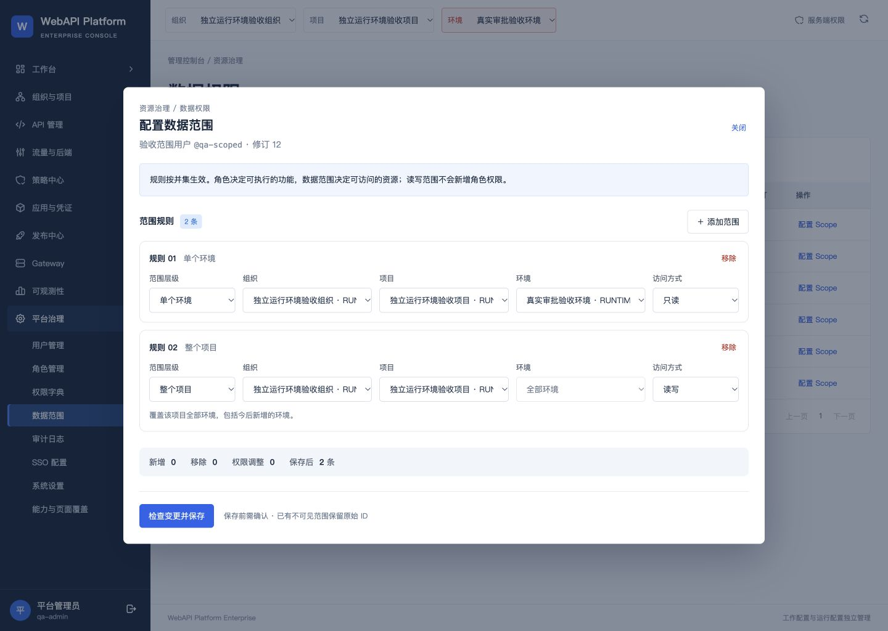
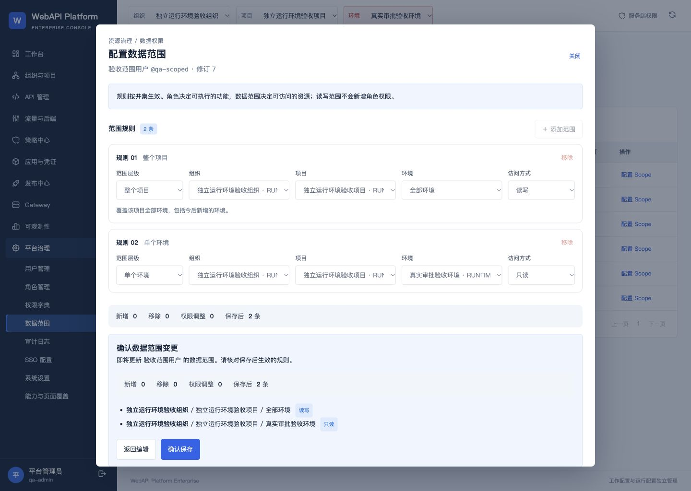
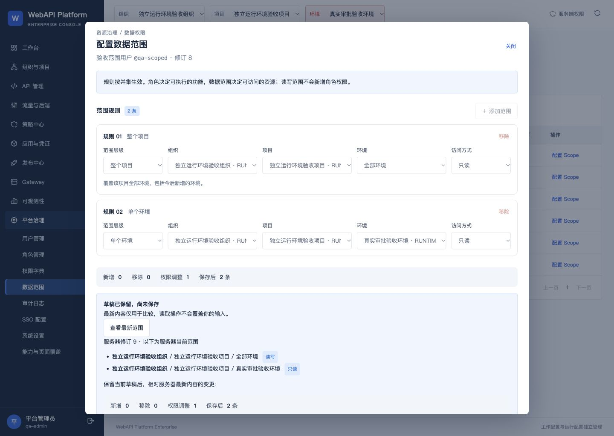
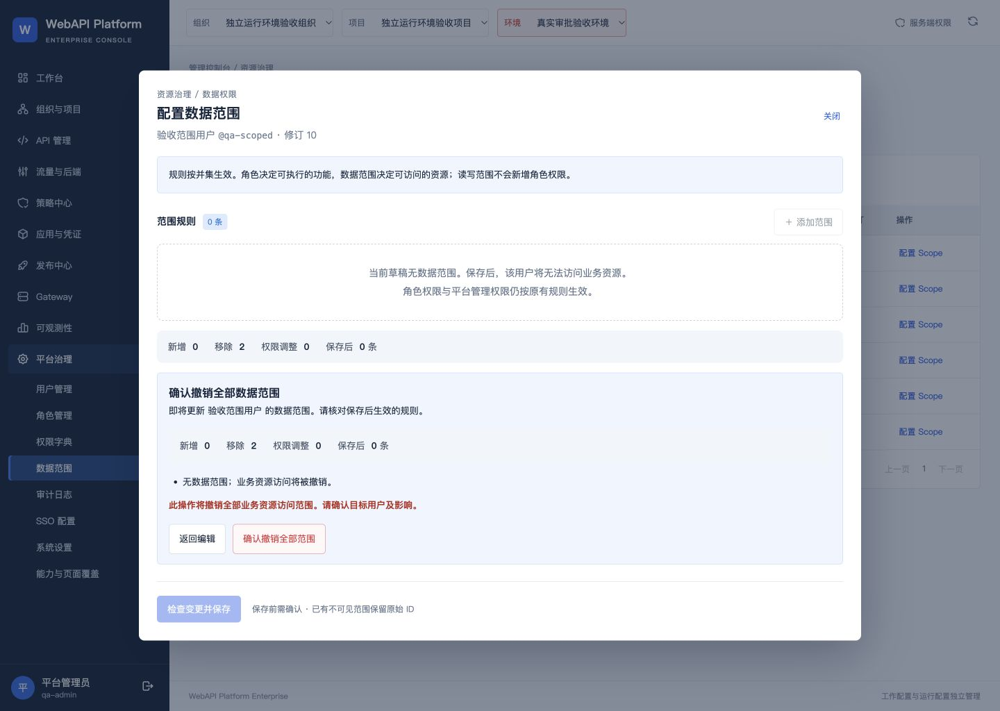

WebAPI Platform Enterprise V2 / 2026-10-06
第37页：数据范围结构化编辑器
实现与隔离验证已完成，尚未提交、合并或安装到4192。
基线：2744fbf4be551447b6fee4ac947ff56710cc9c7f。本批仅8个前端源码及测试文件，无后端接口、数据库或权限定义变更。
原JSON/UUID编辑改为组织、项目、环境联动选择，保留只读/读写及授权并集。新增/移除、覆盖未来资源提示、变更摘要、撤销确认、未保存保护与412并发处理均已接入。
验证结果
111项前端测试通过（原99＋新增12）；TypeScript检查与Vite生产构建通过。独立代码审查发现的焦点问题已修正并复查，无剩余P1/P2。测试输出 · 构建输出 · 源码及构建指纹
| 检查项 | 验证方式 | 结果 | 记录 |
|---|
| 组织→项目→环境联动 | 实际UI＋回归测试 | 下级只列出所属资源，环境按真实DTO的projectId关联 | 证据 |
| 默认单环境只读与必填校验 | 实际UI＋模型测试 | 未选齐时禁止保存，改变上级不会自动变成整组织授权 | 证据 |
| 明确整组织／整项目范围 | UI与模型测试 | 提示包括今后新增资源；保留read/read_write语义 | 证据 |
| 已有不可见ID保留 | 模型＋SSR测试 | 原范围原样往返，任意新不可见ID不可伪造；此项未另改真实资源状态 | 证据 |
| 完全重复规则拦截 | 实际UI＋回归测试 | 完全相同范围及访问模式不能重复；不同模式的重叠范围保留 | 证据 |
| 摘要与显式确认 | 实际UI | 新增／移除／权限调整／保存后条数，确认期间规则锁定 | 证据 |
| 保存及服务端修订 | 实际UI＋服务端读取 | 同范围保存修订7→8；更新列表及会话 | 证据 |
| 412并发冲突 | 实际UI＋合成并发 | 保留只读草稿，最新修订9及真实授权只用于比较，显式采用后保存至10 | 证据 |
| 空范围明确撤销 | 实际UI＋既有会话API | 原既有会话200→404；恢复相同授权后200，角色及权限集合未改 | 证据 |
| 未保存草稿保护 | 实际UI | 关闭需确认放弃；浏览器返回被拦截，URL和输入保留 | 证据 |
| 焦点与键盘 | 实际UI＋独立审查 | 初始聚焦关闭，取消确认后焦点回到弹窗，Shift+Tab循环；忙碌兜底经代码复查 | 证据 |
| 无scope.manage权限 | 实际UI | qa-viewer显示缺少权限，无法读取用户列表或打开编辑器 | 证据 |
| 1440×1024设计QA | 截图与只读DOM | 页面及弹窗均无水平溢出，最终2条原授权完整展示 | 证据 |
| 原环境与本机文件保留 | 只读状态及哈希 | 4192仍为2744fbf、Ready，原本机修改/交付物未变，测试原授权已恢复 | 证据 |
交付边界
浏览器预览5175仅代理独立合成验收环境53735，测试后已停止预览及测试服务，保留其原数据卷。测试用户qa-scoped的两条原授权已按无序集合完整恢复；用户修订及本次合成审计记录按真实测试保留。4192持续运行，仍为2744fbf与配置v4/序列4。本批未升级4192，未新增全40页遍历、真实企业集成或生产验收。旧的40页验收包保持原样。
授权方式仍为：角色功能权限与数据范围共同控制访问。空范围仅撤销业务资源范围，既有平台权限按原规则生效。不可见范围的保留通过模型与SSR测试验证；当前实际UI测试使用可见合成资源。
可审阅升级范围
待授权后可仅固定本批8个源码/测试文件为本地提交，构建不可变发布，完成冷备份后合并并升级4192。保留已有账户和数据，切换期间服务会短暂停止；本次尚未执行此步骤。
完整8文件补丁 · 原环境保留证据 · 4192只读运行状态 · 案例记录与验证方式
关键界面

最终结构化编辑器 · 原始1440×1024截图
保存前变更摘要与确认 · 原始1440×1024截图
并发最新范围比较 · 原始1440×1024截图
撤销全部范围确认 · 原始1440×1024截图保留00-dto-validation-red.jpg及失败测试输出用于追溯已修正缺陷；最终结果以15-final-restored-editor.jpg及test-green.txt为准。包内不含私有密码、会话、API Key或运行环境凭据。